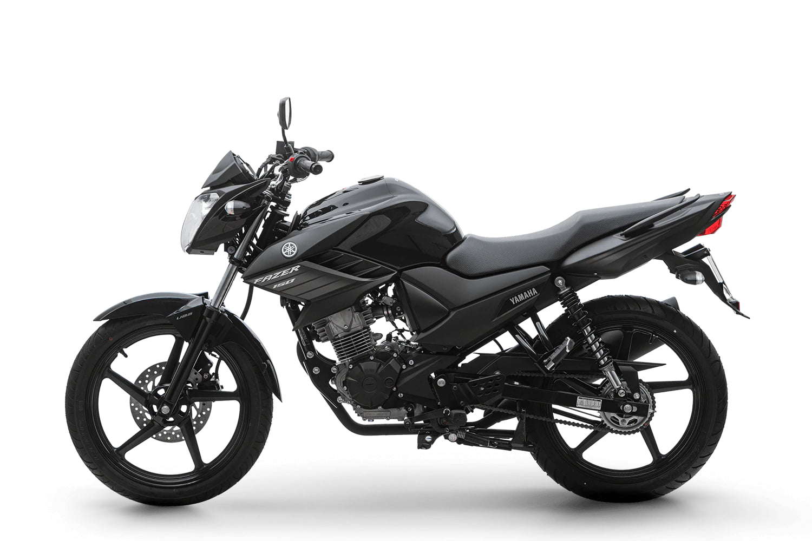
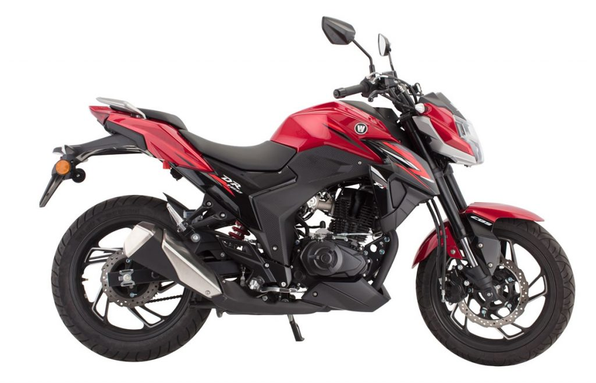

Motos naked até 20 mil
Se você está procurando motos naked até 20 mil, saiba que existem várias opções interessantes no mercado brasileiro. As motos naked são conhecidas pelo visual esportivo, posição de pilotagem confortável e ótimo desempenho para uso urbano.
Mesmo com o aumento dos preços nos últimos anos, ainda é possível encontrar modelos usados ou seminovos que entregam excelente custo-benefício. Neste guia, vamos mostrar algumas das melhores motos naked até 20 mil que realmente valem a pena considerar.
Essas motos normalmente possuem motores entre 150cc e 160cc, oferecendo bom equilíbrio entre desempenho e economia de combustível. Por isso, são muito utilizadas por quem precisa de uma moto confiável para o dia a dia, deslocamento para trabalho ou faculdade.
O que considerar antes de comprar uma moto naked
Antes de escolher entre as motos naked até 20 mil disponíveis no mercado, é importante analisar alguns fatores importantes. O primeiro deles é o consumo de combustível, já que muitas dessas motos são utilizadas no dia a dia para deslocamento urbano.
Outro ponto relevante é o custo de manutenção. Modelos populares costumam ter peças mais baratas e fáceis de encontrar. Além disso, vale analisar o conforto da moto, especialmente se você pretende usar a motocicleta para trajetos mais longos.
Também é importante verificar itens como freios, suspensão e ergonomia. Uma moto com posição de pilotagem confortável pode fazer muita diferença no uso diário, principalmente em trajetos maiores ou trânsito intenso.
Melhores motos naked até 20 mil
Yamaha Fazer 150

A Yamaha Fazer 150 é uma das motos naked mais populares do Brasil. O modelo é conhecido pela confiabilidade mecânica, bom consumo de combustível e excelente desempenho para a categoria.
Seu motor de 149cc entrega cerca de 12,4 cavalos de potência e oferece bom desempenho no uso urbano. O consumo médio pode chegar a aproximadamente 35 a 40 km/l dependendo da forma de pilotagem.
No mercado brasileiro, o preço de uma Yamaha Fazer 150 usada ou seminova costuma variar entre R$ 12.000 e R$ 18.000, dependendo do ano e do estado da moto.
Prós: excelente economia de combustível, manutenção barata e alta confiabilidade.
Contras: potência limitada para estrada e ausência de alguns recursos mais modernos.
Honda CB 160

Outra opção interessante entre as motos naked até 20 mil é a Honda CB 160. Esse modelo se destaca pelo equilíbrio entre desempenho e economia.
O motor de 160cc entrega cerca de 14 cavalos de potência, oferecendo bom desempenho para uso urbano e pequenas viagens. O consumo médio fica próximo de 35 km/l.
O preço médio da Honda CB 160 usada ou seminova no Brasil varia entre R$ 13.000 e R$ 19.000, dependendo do ano de fabricação.
Prós: motor confiável, peças fáceis de encontrar e ampla rede de concessionárias.
Contras: design mais simples comparado a modelos mais novos e menos tecnologia no painel.
Haojue DR 160

A Haojue DR 160 vem ganhando espaço no mercado brasileiro e já aparece como uma das motos naked com melhor custo-benefício da categoria.
Seu motor de 162cc entrega cerca de 15 cavalos de potência e oferece desempenho competitivo dentro da categoria. O consumo médio costuma ficar em torno de 35 km/l.
O preço médio da Haojue DR 160 no mercado brasileiro costuma ficar entre R$ 15.000 e R$ 20.000, dependendo do ano e do estado da moto.
Prós: bom acabamento, motor eficiente e ótimo custo-benefício.
Contras: rede de concessionárias menor que Honda e Yamaha e menor revenda no mercado de usados.
Qual moto naked até 20 mil escolher?
A escolha da melhor moto naked depende muito do seu perfil de uso. Se você busca uma moto extremamente confiável e com manutenção barata, a Yamaha Fazer 150 pode ser uma excelente escolha.
Já quem prefere um modelo com tradição no mercado e ampla rede de concessionárias pode optar pela Honda CB 160. Por outro lado, a Haojue DR 160 aparece como uma alternativa interessante para quem busca algo diferente e moderno.
Independentemente da escolha, todas essas motos naked até 20 mil oferecem bom desempenho para uso urbano, economia de combustível e custo de manutenção relativamente acessível.
Se quiser conhecer mais detalhes sobre motos e especificações técnicas, você também pode visitar o site oficial da Honda Brasil.